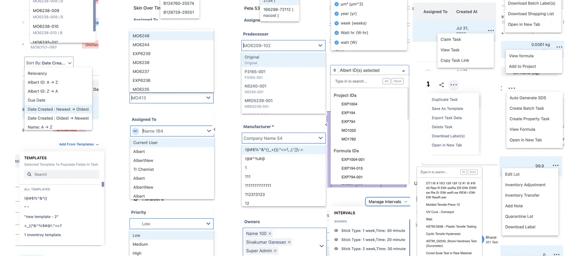
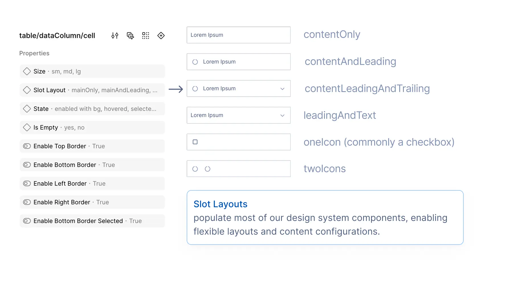
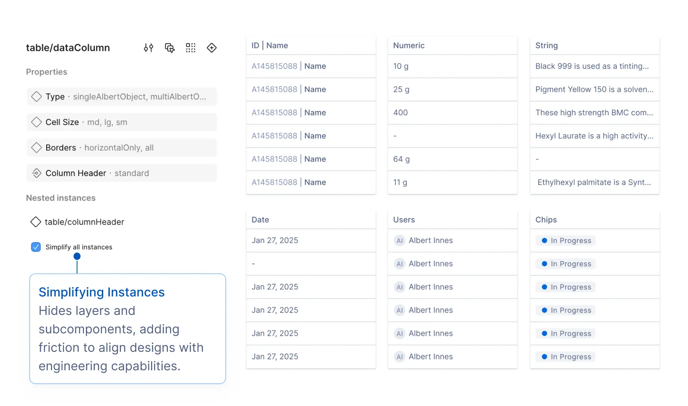
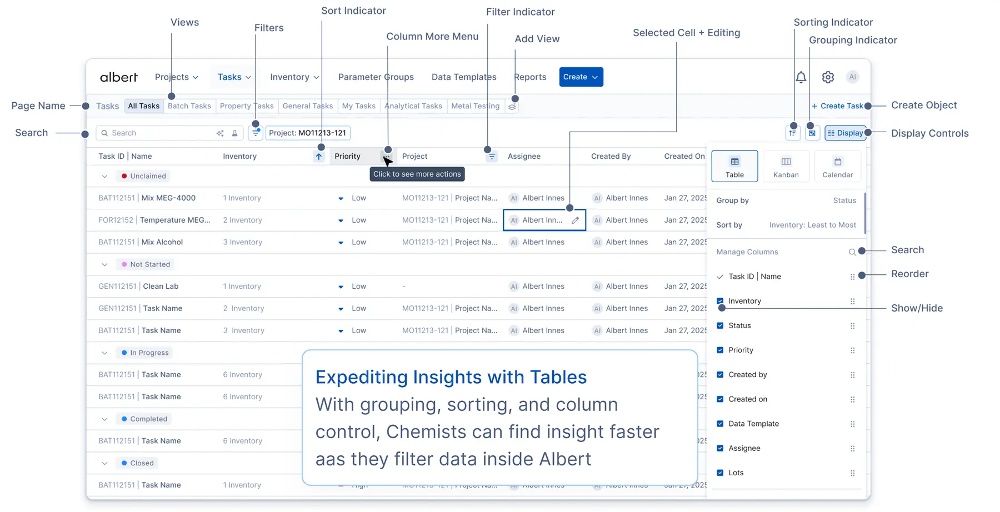
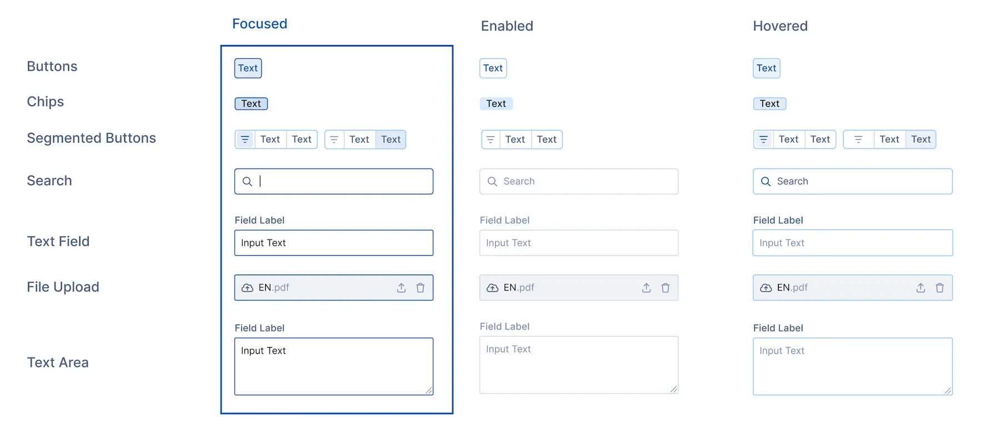
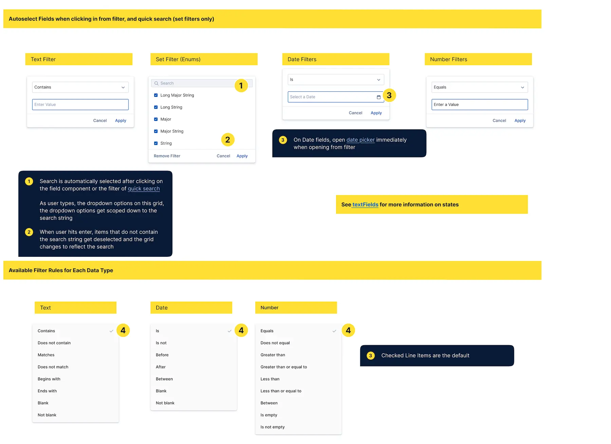
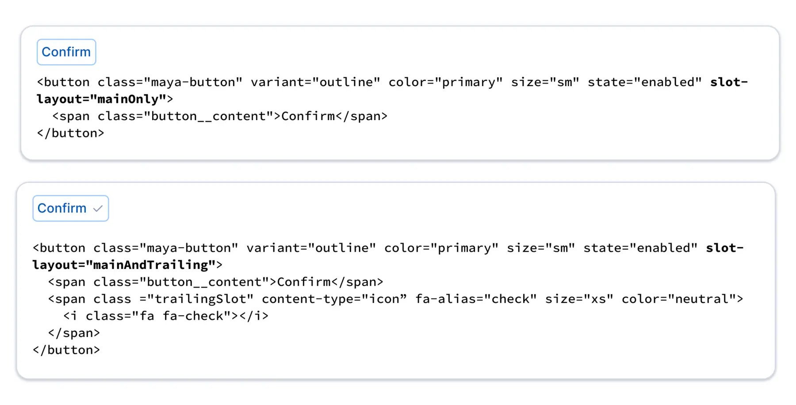

Every feature was paying a tax.
Albert Invent sells R&D software to material-development companies. Its chemists work in dense, precise data. Before Maya, every new feature shipped more slowly than the last.
- Redundant code. Four third-party libraries produced duplicate classes and hard-to-trace bugs. Table features routinely slipped by two weeks.
- Three legacy libraries. The system had to provide continuity with existing screens, not just consistency.
- No shared vocabulary. One team’s “table” was another team’s “grid”, and every handoff paid for it.
- Scientific density. Interfaces had to handle scale and precision without making accessibility worse.

Five rules to say no with.
Principles are only useful if they settle arguments, so I wrote these as filters for component requests.
- Predictable experiencesComponents look and behave the same way everywhere.
- Intentional, not perfectEvery component, pattern and variant has to meet a real need, current or emerging.
- Radical simplicityRemove redundancy and unnecessary effort wherever possible.
- Accessibility as a defaultEverything built with Maya meets WCAG AA.
- Delight with insightData-driven recommendations that push chemists toward the next experiment.
Tokens named for intent, not appearance.
I didn’t copy another system’s tokens. I started from Albert’s brand colours and built primitive shade ramps: cobalt for primary actions, slate for neutrals. Then I designed real screens before naming anything, so the names would reflect how tokens were actually used.
The specimens below use Maya’s actual values, rendered live.
maya/tokens/colorText
Background
Border & state
maya/tokens/textmaya/tokens/sizeThe flexibility trap.
Albert runs on micro-frontends, so every component has to work on its own. My first instinct was to make components endlessly configurable. That was a mistake.
I built a slot model: a component defines a main slot plus optional leading and trailing slots, and each slot can swap its content (an icon, a chip, an input) without breaking the component’s look or behaviour. For buttons and chips, this worked well.
slot-layout<button class="maya-button" variant="outline" color="primary"
size="sm" state="enabled" slot-layout="mainOnly">
<span class="button__content">Confirm</span>
</button>
Then I applied the same model to the table cell, where chemists spend most of their time. I gave it every option: size, six slot layouts, states, five border toggles, and swappable content in every slot.
“We can’t build this cell component. It has too many permutations. Can we simplify somehow?”
counted from the component property panelsConfigure every cell
- Size 3
- Slot layout × 6
- State × 3+
- Empty × 2
- Border toggles × 2⁵
- Content type, one slot × 6
Configure the column
- Data type 2+
- Cell size × 3
- Borders × 2
- Cell layout, content, states inherited
The pivot: components at the column level
Instead of configuring cells, you configure a dataColumn. Choose the data type once, and every cell in that column inherits the right layout, content and states. The cell-level settings still exist but are hidden. That decision alone cut months from the table build.
one setting → every cell| ID | Material | Status |
|---|---|---|
| A14581 | Pigment Yellow 150 | In progress |
| A14582 | Hexyl laurate | Complete |



Contrast is measured, not assumed.
I checked every text token against every surface it could appear on, and designed a focus state for every interactive component from the start, so that reaching AAA later wouldn’t require a redesign.
WCAG 2.x · AA = 4.5:1 body, 3:1 large| Token | background | background-dim | background-medium | cobalt-95 |
|---|---|---|---|---|
| text#1E1E29 | 16.50AAA | 15.81AAA | 14.72AAA | 13.32AAA |
| text-medium#4D5E80 | 6.50AA | 6.23AA | 5.80AA | 5.25AA |
| text · primary#0054B9 | 7.07AAA | 6.78AA | 6.31AA | 5.71AA |
| text-dim#8091B3 | 3.17Large only | 3.04Large only | 2.83Fail | 2.56Fail |
text-dim row is the one I’d change; see Reflection.
A system is a product with users.
Maya’s users were the designers and engineers building Albert. I ran it like a product: requests were collected, filtered against the principles, tested internally, then released and migrated module by module.
Request
Anyone could request a component or variant through a Notion form. It also showed us what people actually needed.
Review
Clear criteria for new components, to avoid bloat without ignoring real needs.
Trial
Engineers and designers tried components inside real features before wider release.
Document
Storybook-style docs showing how each component is used, and why.
Migrate
For every project, a clear call on legacy or Maya. Modules moved one at a time.
Weekly syncs with product and engineering were working sessions, not status updates. Module-specific templates carried the system into product briefs. A hackathon got teams building with Maya hands-on.


Weeks became days.
- 6 weeks → 2 weeks to build a feature from existing Maya components.
- 80% of major modules migrated to Maya by November 2025.
- 29 production components covering forms, navigation, data visualisation and tables, from one library instead of three.
- Months saved on tables by moving configuration from the cell to the column. That table work went on to support three seven-figure enterprise deals.
“What used to take us weeks to build now ships in days.”
What I’d do differently.
Fewer options make for faster shipping
The most valuable thing I did was take options away. Now I start a component by asking which decisions the system should make for the designer, not how many it can offer.
Fix text-dim at the token level
We limited text-dim to helper text, but helper text is still text, and at 3.17:1 it doesn’t meet AA. I’d darken it within the same slate hue, which keeps the visual hierarchy and passes on every neutral surface:
Measure adoption from the beginning
We tracked migration by module. I’d also have tracked how often components were inserted or detached, from the first release, so we’d have had usage data rather than just migration counts.
Built with
- Nelson GomezDesign Systems Lead
- Adam HarrisPlatform Lead
- Ityam DeshpandeDesign Manager